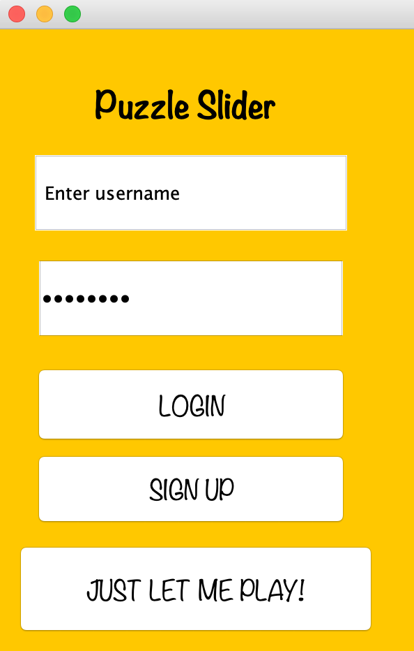
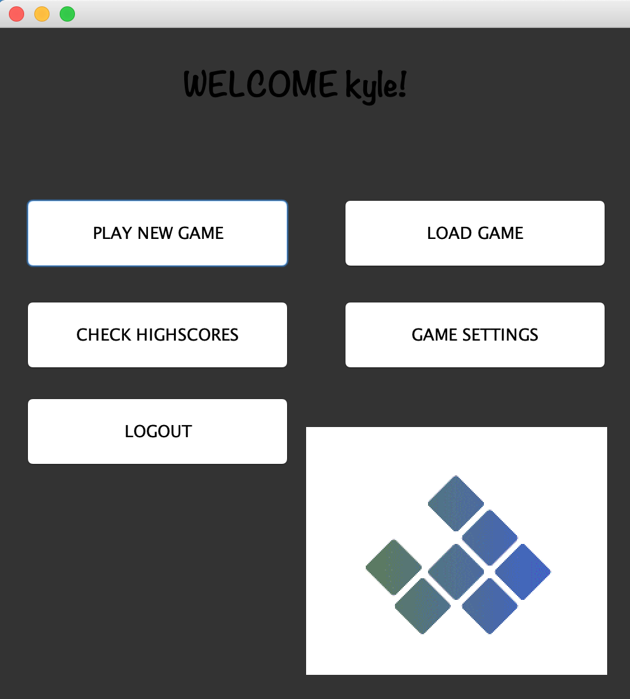
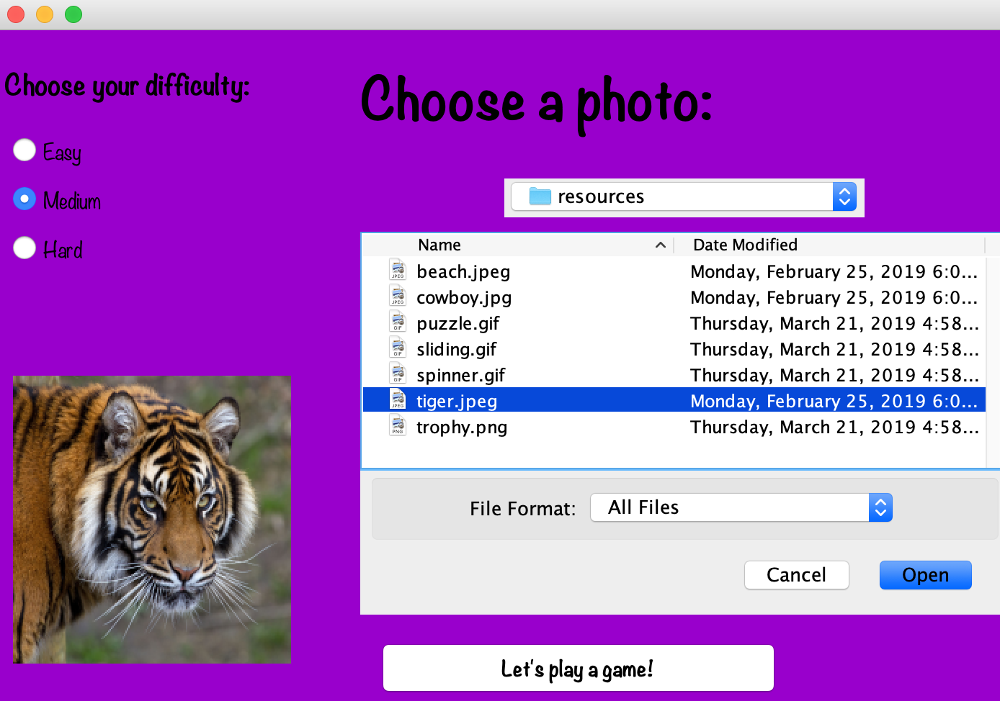
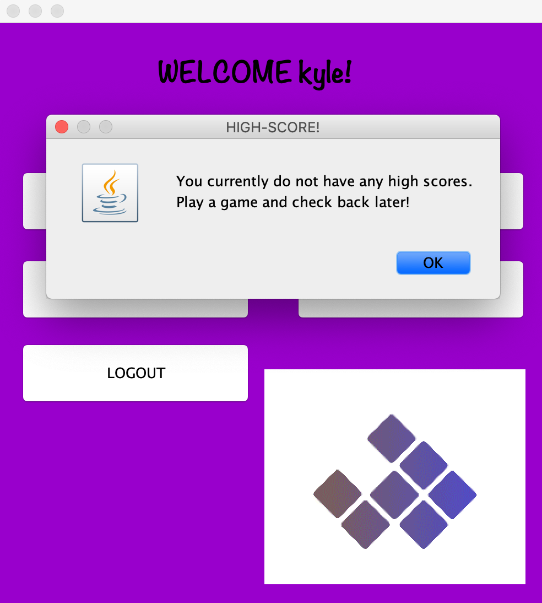
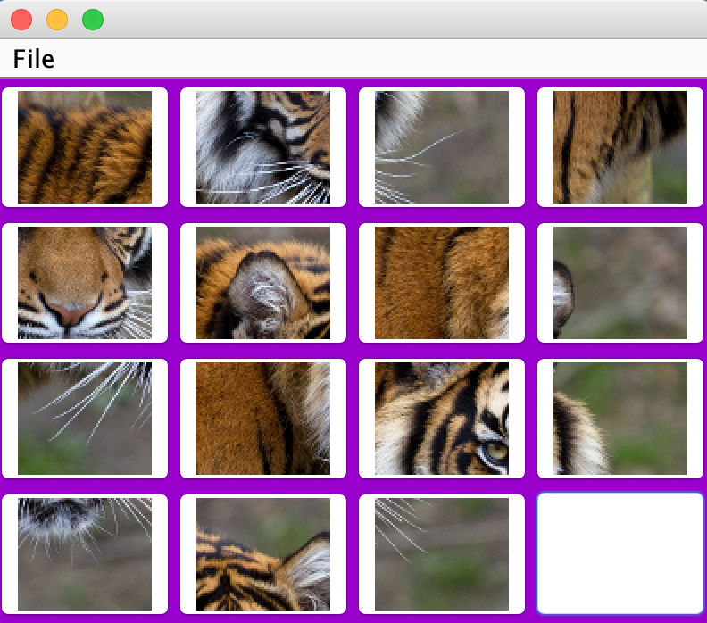
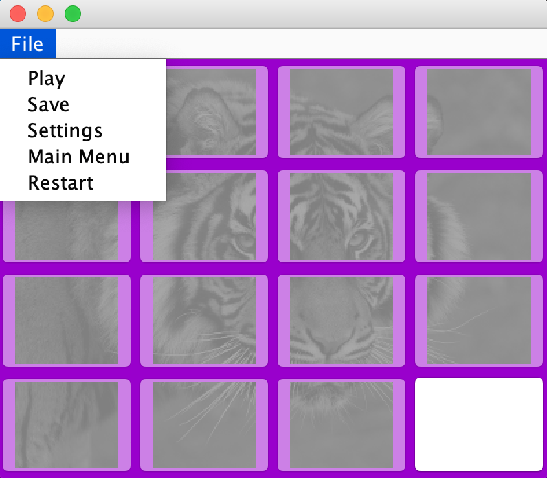
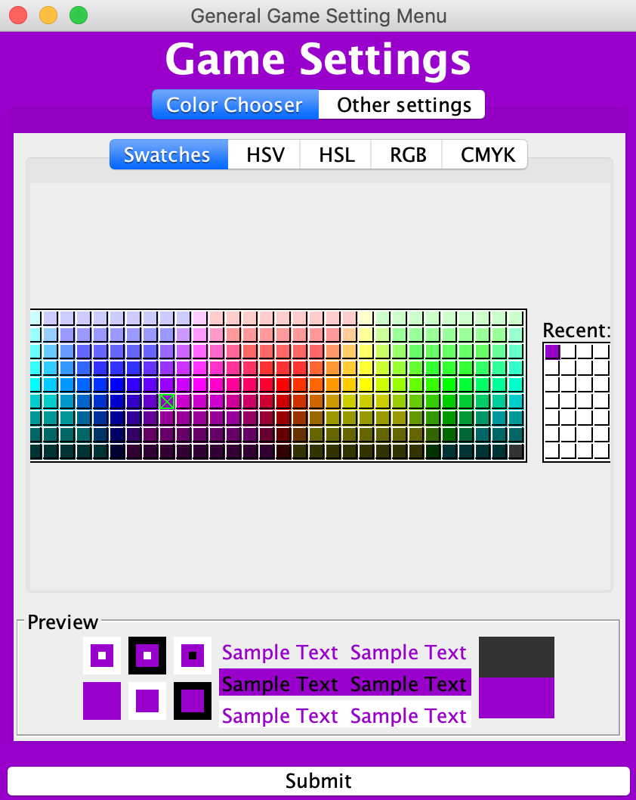
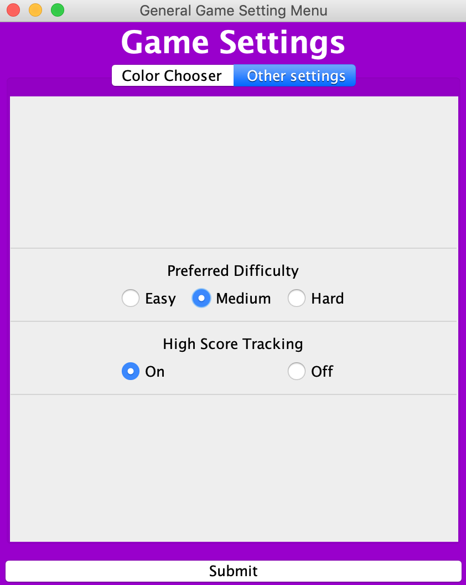

Users Guide
This section provide the first draft Users Guide for the software
Introduction
- The Puzzle Slider game is a fun way to kill some time. When you are feeling bored or just
enjoy playing puzzle games why not play Puzzle Slider? This game is fun and easy to navigate, but in case
you aren't quite sure what to do we have constructed this users guide so you can figure out those tricky questions.
Getting Started
- Quick Start
- Upon the login screen you will see three buttons: "Login",
"Sign up", and "JUST LET ME PLAY!". If you are already registered, you may enter your username and password and login.
If you would like to register you can enter in a username and password and then select the "Sign up" button. If you are
not wanting to sign in or register a new account you can select the "JUST LET ME PLAY!" button. After logging in/signing
up/or selecting just let me play you will be taken to the Main Menu screen. From this screen you have the options to play
a new game, load an existing game, check your previous high-scores, access game settings, and logout. If a new game is selected,
then the Game Setup Menu is displayed. This gives you the option of selecting your difficulty, choosing a photo or uploading a
new photo to play the game with. Once you have selected your difficulty and chosen a photo (or uploaded one) you will then be
directed to the Game Session, here you will play the game until you select one of the following options: Pause, Game Settings,
Save and Exit, or Restart Game.
- Launching the Application
Currently you can launch the application by using the Maven execute java goal. Or by running the .jar file generated from the Maven install goal.

Upon selecting one of the options from the LoginScreen, the next interface will automatically pop up
and give an abundance of options. On this screen you will be able to select a new game, load an unfinished game, check your highscores,
change some game settings, and logout.

If "play new game" is selected, then the image selection and difficulty options will be shown. Here you can select your difficulty
and choose an image to play the game with. Once you have selected both of those things, you can now click "Play a game!". Once you select this button
then you will be taken to the game screen to play your game.

If "check high-scores" is selected, then a window will pop up and you can view your current high-score.
If you have not played a game, the window will tell you to check back later.

If "load a game" is selected, then the a previously played game will load onto the game screen so you may finish your puzzle.
If no previous game has been played, then a window will pop up notifiyng you that you have no previous saved game to play.


If "logout" is selected, then the game will close and you will be logged out.
If "settings" is selected, then a color chooser will appear, and you may choose your preferred background color for the main menu screen.
Other options include a difficulty setting, as well as high-score tracking on or off.

